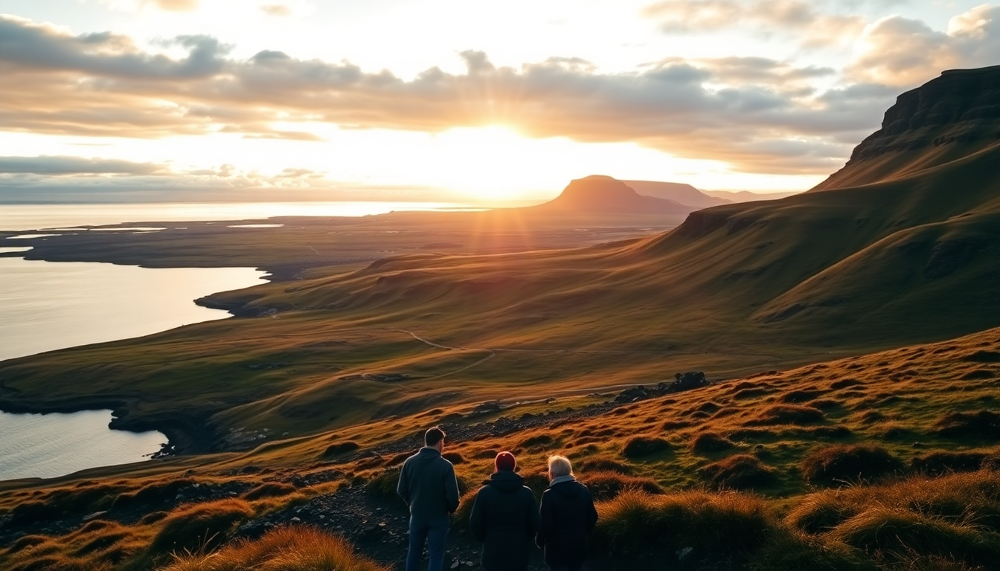

Best Day Trips from Reykjavik: Golden Circle, Blue Lagoon & Snæfellsnes

We landed at Keflavik at 6 AM, jet-lagged but wired on the arctic light. After three day trips out of Reykjavik—Golden Circle, Blue Lagoon, and Snæfellsnes—I learned which routes deliver and which hype you can skip. Here’s exactly what worked, what didn’t, and where you should spend your limited daylight.
Where do you actually stop on the Golden Circle?
The classic loop hits three spots, but the order matters if you want to beat the crowds. We started at Thingvellir National Park at 8 AM and had the rift valley almost to ourselves. Walk the path between the North American and Eurasian tectonic plates—it’s genuinely impressive, not just a photo op.
Next we hit Gullfoss waterfall. It’s loud, wet, and powerful. The lower viewing platform gets soaked, so bring a waterproof jacket, not just an umbrella. Then Geysir—specifically Strokkur, which erupts every 5-10 minutes. The original Geysir is mostly dormant, so don’t wait around for it.
- Thingvellir: Arrive before 9 AM. Parking costs 750 ISK. Snorkeling tours meet at the main lot.
- Gullfoss: Free entry. The café has decent lamb soup for 2,200 ISK.
- Strokkur (Geysir): No entrance fee. Skip the overpriced hot dogs at the gas station next door.
- Efstidalur II: Dairy farm with ice cream made on-site. A cone costs 1,200 ISK and is worth the detour.
- Fridheimar: Greenhouse restaurant serving tomato soup and bread. Lunch only, reservations required.
The whole loop takes 6-7 hours if you linger. We finished by 3 PM and drove back to Reykjavik in time for a nap.
Is the Blue Lagoon worth the price and the hype?
I’ll be blunt: it’s expensive (from 8,500 ISK for the cheapest entry), it’s crowded, and the water is literally runoff from a geothermal power plant. But it’s also weirdly relaxing. The silica mud masks, the steam rising off the milky-blue water, the swim-up bar—it’s a manufactured experience, but it’s a good one.
The trick is timing. We booked the 8 AM slot and had 45 minutes of near-silence before the crowds rolled in. By 10 AM, every ledge had a selfie stick. The locker rooms are chaotic, so pack light and use the digital wristbands for everything.
- Blue Lagoon: Book the 8 AM slot. Premium ticket (12,900 ISK) gets you a towel, robe, and flip-flops—worth it in winter.
- Retreat Spa: Separate, quieter lagoon on-site. Starts at 23,000 ISK. Only if you’re splurging.
- Grindavik: Small fishing town 10 minutes away. Salthúsið restaurant serves excellent langoustine soup for 3,500 ISK.
- Keflavik: If you’re flying out same day, Kaffi Duus has a good fish and chips plate for 2,800 ISK.
We spent exactly 2.5 hours in the water. That’s enough. Your skin will feel like rubber, and your hair will be a straw-like mess—conditioner is provided in the showers, use it liberally.
Can you really do Snæfellsnes as a day trip from Reykjavik?
Yes, but it’s a long day—7 hours of driving round-trip, plus stops. We left at 7 AM and got back at 8 PM. If you’re only in Iceland for 3-4 days, skip this and do the Golden Circle instead. If you have 5+ days, Snæfellsnes is the best single-day drive on the island.
The peninsula packs more variety than the Golden Circle: black beaches, basalt cliffs, a glacier-capped volcano, and fishing villages. The road conditions vary wildly. In summer, a 2WD is fine. In winter, you need a 4x4—we saw a rental Yaris stuck in a snowbank near Arnarstapi.
- Kirkjufell: The most photographed mountain in Iceland. The waterfall in front is small but frames the shot perfectly. Free parking.
- Arnarstapi: Coastal walking path with basalt arches. Búðakirkja (black church) is 5 minutes south. No entry fee.
- Djúpalónssandur: Black beach with wreckage from a British trawler. Don’t swim—the riptides are lethal.
- Stykkisholmur: Charming harbor town. Narfeyrarstofa serves fish of the day for 4,200 ISK. Best meal on the peninsula.
- Borgarnes: Stop here for gas and coffee at Kaffi Kyrrð. The Settlement Center museum is decent if you have 45 minutes.
The glacier Snæfellsjökull itself is often cloud-covered. We saw it for maybe 10 minutes total. Don’t plan your day around a clear view.
What should you pack for these day trips?
Iceland’s weather changes every 15 minutes. On the Golden Circle, we had sun, rain, sleet, and wind within two hours. Layers are non-negotiable. A waterproof outer shell is more important than a heavy coat because the wind cuts through everything.
- Waterproof jacket and pants: Not optional. Rain pants saved us at Gullfoss.
- Hiking boots: Waterproof, with ankle support. The paths at Thingvellir and Arnarstapi are uneven.
- Swimsuit and microfiber towel: For Blue Lagoon. They rent towels, but it’s cheaper to bring your own.
- Neck gaiter or buff: Covers your face when the wind kicks up. Better than a scarf.
- Reusable water bottle: Tap water in Iceland is excellent. Fill up at any gas station.
- Snacks: Food on the road is expensive. We packed sandwiches and granola bars from Bónus supermarket in Reykjavik.
We also brought a portable charger. Phone battery drains fast in the cold, and you’ll use GPS constantly.
Where should you stay in Reykjavik for day trips?
Base yourself near Laugavegur (the main shopping street) or Hlemmur bus station. That puts you within walking distance of tour pickups and the main ring road exit. We stayed at Kex Hostel on Skúlagata—it’s a converted biscuit factory with a great bar and dorm beds from 6,500 ISK. Private rooms run about 25,000 ISK.
- Kex Hostel: Lively common area, good location, but thin walls. Earplugs recommended.
- Hotel Borg: Historic property near Austurvöllur square. Doubles from 35,000 ISK. Quiet, central.
- Icelandair Hotel Marina: Trendy spot near the old harbor. The bar has a happy hour from 4-6 PM.
- Airbnb: We found a studio near Hallgrímskirkja for 18,000 ISK a night. Cheaper than hotels, but check if the host includes parking.
Parking in downtown Reykjavik is paid (around 250 ISK per hour) and scarce. If you rent a car, confirm your accommodation has a spot. We didn’t, and spent 20 minutes circling for street parking every evening.
FAQ
How much time do you need for each day trip? Golden Circle takes 6-8 hours including driving. Blue Lagoon needs 3-4 hours total (1 hour from Reykjavik, 2-3 hours at the lagoon, 1 hour back). Snæfellsnes requires a full 12-hour day—leave by 7 AM, return by 8 PM.
Can you combine the Blue Lagoon with the Golden Circle in one day? Technically yes, but we don’t recommend it. The Blue Lagoon is near Keflavik Airport, 45 minutes west of Reykjavik. The Golden Circle is east. You’d spend 4+ hours driving and rush both experiences. Do them on separate days, or do the Blue Lagoon on your arrival or departure day.
Is self-driving better than a tour for these trips? We self-drove all three and preferred it for flexibility. Tours cost 10,000-20,000 ISK per person and herd you through on a schedule. But in winter, a guided bus is safer—roads to Snæfellsnes can close with little notice. For the Golden Circle, a rental car is fine year-round.
Conclusion
- Start the Golden Circle at Thingvellir before 9 AM to avoid crowds. Eat at Efstidalur II, not the gas station.
- Book the Blue Lagoon for 8 AM. Premium ticket includes towel and robe. Skip the Retreat Spa unless you have cash to burn.
- Snæfellsnes is a full-day commitment. Focus on Kirkjufell, Arnarstapi, and Stykkisholmur. Skip the glacier if it’s clouded over.
- Pack waterproof everything, a reusable bottle, and snacks from Bónus. Layers beat a single heavy coat.
- Stay near Laugavegur or Hlemmur. Confirm parking with your accommodation before you book.